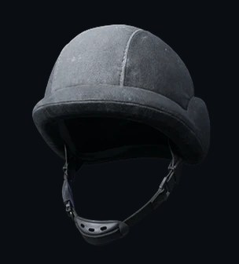

Casque anti-émeute
Anti-Riot Helmet · casque
Casque de protection. Le jeu ne publie pas ses valeurs de protection : compare-la à ses voisines avant de l’acheter. La tête est la zone qui pardonne le moins, mais aussi la plus difficile à couvrir correctement.
22 222 Tekniqgrade 3 rare · 5 556 par case